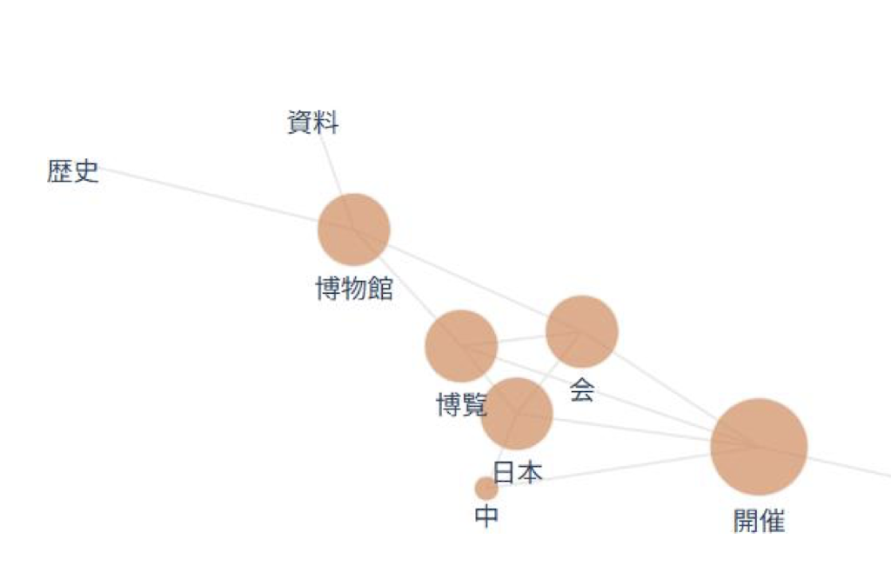
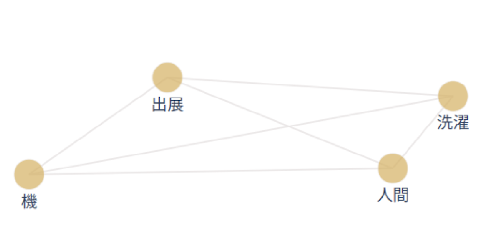
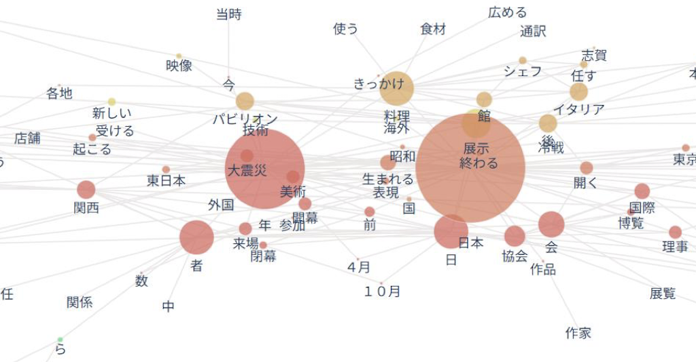
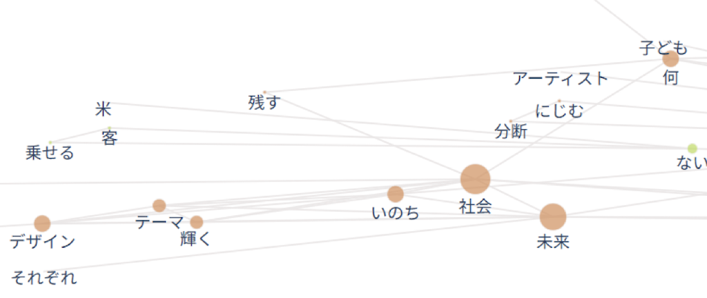

私たちの班では大阪万博がが開催された最初の一カ月（4/13~5/13）と最後の一カ月（9/13~10/13）を分析し、大阪万博の評判にどのような変化があったかを比較しました。
⭐️初めの一ヶ月


初めの一ヶ月の共起ネットワークでは、「開催」「日本」「博覧」「博物館」「出展」といった語が多く見られました。
これらの語から、この時期の記事は万博の開始そのものや、展示内容、公式行事としての側面を中心に報じていたことが分かります。
報道は制度的・事実的な情報が多く、万博を「始まったばかりの国家的イベント」として紹介する傾向が強かったと考えられます。
この段階では、評判や評価よりも、開催の報告や概要説明が主な目的だったように感じました。
⭐️最後の一ヶ月


最後の一ヶ月では、「終わる」「閉幕」「来場」「社会」「未来」「いのち」「輝く」といった語や、国名・パビリオン名など具体的な語が多く現れました。
このことから、報道の関心は万博の終了や総括、来場者の動向、万博が社会や未来に与えた意味へと移っていたことが分かります。
また、「未来」「いのち」「きっかけ」などの語から、万博を通して得られた経験や価値を振り返り、意義を評価する記事が増えていたと考えられます。
万博は単なるイベントではなく、社会的な意味を持つ出来事として扱われるようになっていたと思いました。
⭐️評判の変化・考察
初期は開催や制度、展示といった客観的・形式的な話題が中心であったのに対し、閉幕期には内容や影響、意義に焦点が当てられるようになりました。
この変化から、万博の評判は、当初の「始まったイベント」から、最終的には「人々に何を残したかを評価される存在」へと変化したと考えました。
また、特に未来や社会といった語の増加は万博が前向きに受け止められていた可能性を示しているように感じました。
⭐️ 感想・反省
今回の分析では、新聞記事を用いて万博の評判の変化を考察しましたが、記事だけから人々の感情や実際の満足度を正確に読み取ることは難しいと感じました。
新聞は出来事や評価を整理して伝える一方で、個々の来場者の喜びや不満などの細かな感情までは十分に反映されにくいことが原因だと思いました。